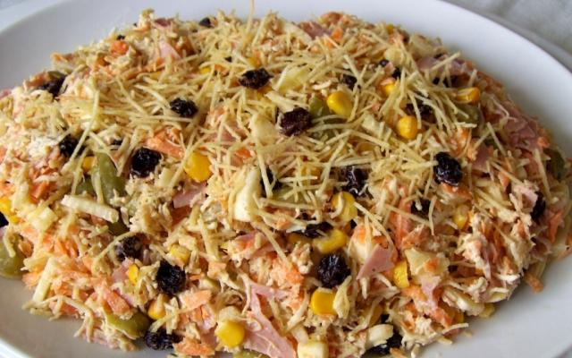

Salpicao

Description
Salpicão is a popular Brazilian salad known for its refreshing and delightful combination of flavors and textures.
This salad typically features shredded chicken, vegetables like carrots and peas, raisins, and crunchy potato sticks,
all tossed in a creamy mayonnaise-based dressing. The result is a harmonious blend of savory, sweet, and creamy elements
that make Salpicão a beloved dish often served at festive gatherings and celebrations in Brazil.
Ingredients
- 2 cups of cooked and shredded chicken breast
- 1 cup of carrots, finely grated
- 1/2 cup of green peas (fresh or frozen), cooked
- 1/2 cup of raisins
- 1/2 cup of canned corn kernels (optional)
- 1/2 cup of mayonnaise
- 1/4 cup of sour cream
- 1/4 cup of whole milk or cream
- 2 tablespoons of ketchup
- 1 tablespoon of yellow mustard
- 1 tablespoon of lemon juice
- Salt and black pepper to taste
- 2 cups of potato sticks (potato chips can be used as a substitute)
- Fresh parsley or chives for garnish (optional)
Steps
-
Cook chicken breasts in boiling water until fully cooked, then shred the chicken using a fork or your hands.
Set aside.
-
Finely grate the carrots and cook the green peas until they are tender. Drain and set aside.
-
In a mixing bowl, combine the mayonnaise, sour cream, whole milk or cream, ketchup, yellow mustard, and lemon juice.
Mix until you have a smooth and creamy dressing. Season with salt and black pepper to taste.
-
In a large mixing bowl, combine the shredded chicken, grated carrots, cooked green peas, raisins, and canned corn (if using).
-
Pour the creamy dressing over the chicken and vegetable mixture. Gently toss everything together until well coated with
the dressing. Adjust the seasoning if needed.
-
Cover the salad and refrigerate for at least 30 minutes before serving. This allows the flavors to meld together.
-
Just before serving, sprinkle the potato sticks (or chips) over the top of the salad for a delightful crunch.
-
If desired, garnish with fresh parsley or chives for an extra pop of color and flavor.
-
Enjoy your Brazilian Salpicão salad as a side dish or a main course.
It's a refreshing and satisfying blend of flavors and textures that's perfect for gatherings and
celebrations.